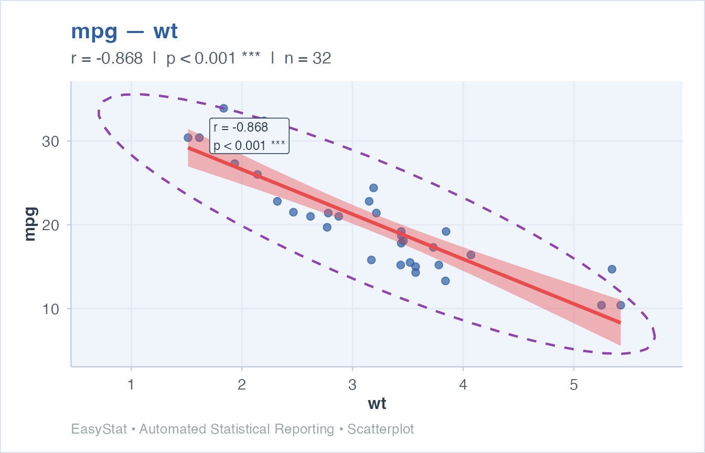
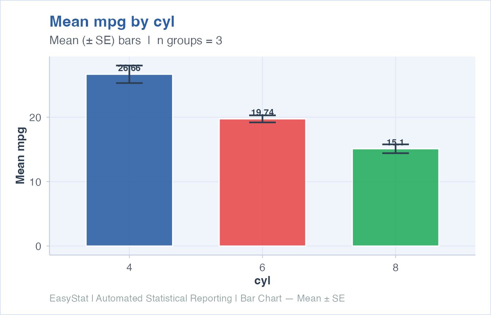
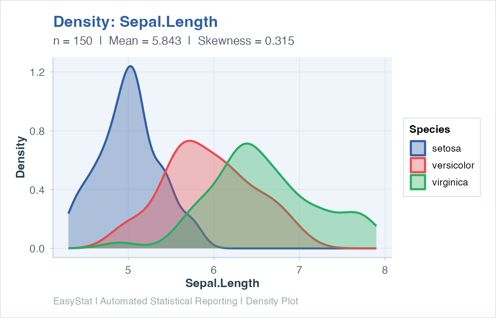
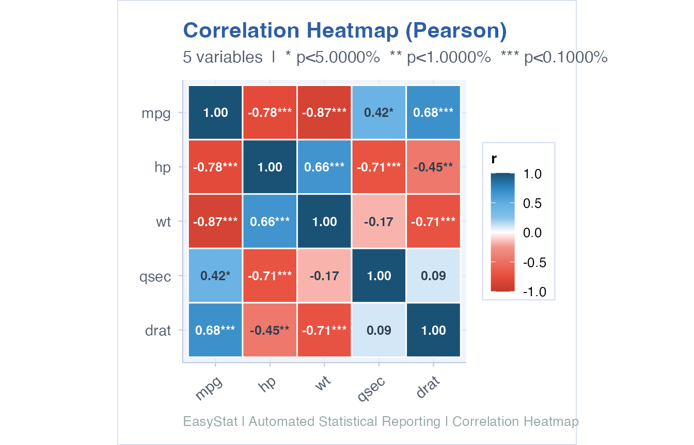

Overview
EasyStat implements a four-step pipeline that transforms raw data into publication-ready statistical output with a single function call:
-
Core Statistical Engine — wraps base-R
statsfunctions (lm,t.test,aov, etc.) -
Metric Extractor — uses
broom::tidy()/broom::glance()to extract key values (p-value, effect size, CIs, df) - Narrative Generator Module — applies conditional logic to produce a statistically sound, plain-language interpretation
-
Unified Result Object — returns an
easystat_resultS3 object that prints as HTML in RStudio Viewer or as ASCII in the console, and can be exported to Word
Descriptive Statistics
Single variable
result <- easy_describe(mtcars$mpg)
print(result, viewer = FALSE)
#>
#> ================================================================================
#> EasyStat Result :: DESCRIBE
#> ================================================================================
#>
#> TABLE 1 — MAIN RESULTS
#> --------------------------------------------------------------------------------
#> Variable N Missing Mean Median Mode SD SE Variance Min Q1
#> mtcars$mpg 32 0 20.0906 19.2 21 6.0269 1.0654 36.3241 10.4 15.425
#> Q3 Max Range IQR CV_pct Skewness Kurtosis CI_lower CI_upper Shapiro_p
#> 22.8 33.9 23.5 7.375 29.9988 0.6724 -0.022 17.9177 22.2636 12.2881%
#>
#> TABLE 2 — MODEL FIT / SUMMARY
#> --------------------------------------------------------------------------------
#> Variable Shape
#> mtcars$mpg moderately right-skewed
#> Kurtosis
#> approximately mesokurtic (similar tail weight to a normal distribution)
#> Normality Shapiro_p
#> approximately normal (Shapiro-Wilk p = 12.2881%) 12.2881%
#>
#> ================================================================================
#> PLAIN-LANGUAGE INTERPRETATION
#> ================================================================================
#>
#> DESCRIPTIVE STATISTICS: mtcars$mpg
#>
#> The variable 'mtcars$mpg' has 32 valid observations (missing: 0). The central
#> tendency is characterised by a mean of 20.0906 and a median of 19.2, with a
#> standard deviation of 6.0269. Values range from 10.4 to 33.9 (range = 23.5;
#> IQR = 7.375). The distribution is moderately right-skewed and approximately
#> mesokurtic (similar tail weight to a normal distribution). Based on the
#> Shapiro-Wilk test, the data are approximately normal (Shapiro-Wilk p =
#> 12.2881%). The coefficient of variation is 30%, indicating moderate
#> relative variability. The 95% confidence interval for the population mean
#> is [17.9177, 22.2636].
#>
#> ================================================================================Multiple variables from a data frame
result <- easy_describe(mtcars, vars = c("mpg", "hp", "wt"))
print(result, viewer = FALSE)
#>
#> ================================================================================
#> EasyStat Result :: DESCRIBE
#> ================================================================================
#>
#> TABLE 1 — MAIN RESULTS
#> --------------------------------------------------------------------------------
#> Variable N Missing Mean Median Mode SD SE Variance Min
#> mpg 32 0 20.0906 19.200 21.00 6.0269 1.0654 36.3241 10.400
#> hp 32 0 146.6875 123.000 110.00 68.5629 12.1203 4700.8669 52.000
#> wt 32 0 3.2172 3.325 3.44 0.9785 0.1730 0.9574 1.513
#> Q1 Q3 Max Range IQR CV_pct Skewness Kurtosis CI_lower
#> 15.4250 22.80 33.900 23.500 7.3750 29.9988 0.6724 -0.0220 17.9177
#> 96.5000 180.00 335.000 283.000 83.5000 46.7408 0.7994 0.2752 121.9679
#> 2.5812 3.61 5.424 3.911 1.0288 30.4129 0.4659 0.4166 2.8645
#> CI_upper Shapiro_p
#> 22.2636 12.2881%
#> 171.4071 4.8808%
#> 3.5700 9.2655%
#>
#> TABLE 2 — MODEL FIT / SUMMARY
#> --------------------------------------------------------------------------------
#> Variable Shape
#> mpg moderately right-skewed
#> hp moderately right-skewed
#> wt approximately symmetric
#> Kurtosis
#> approximately mesokurtic (similar tail weight to a normal distribution)
#> approximately mesokurtic (similar tail weight to a normal distribution)
#> approximately mesokurtic (similar tail weight to a normal distribution)
#> Normality Shapiro_p
#> approximately normal (Shapiro-Wilk p = 12.2881%) 12.2881%
#> non-normal (Shapiro-Wilk p = 4.8808%) 4.8808%
#> approximately normal (Shapiro-Wilk p = 9.2655%) 9.2655%
#>
#> ================================================================================
#> PLAIN-LANGUAGE INTERPRETATION
#> ================================================================================
#>
#> DESCRIPTIVE STATISTICS: mpg
#>
#> The variable 'mpg' has 32 valid observations (missing: 0). The central
#> tendency is characterised by a mean of 20.0906 and a median of 19.2, with a
#> standard deviation of 6.0269. Values range from 10.4 to 33.9 (range = 23.5;
#> IQR = 7.375). The distribution is moderately right-skewed and approximately
#> mesokurtic (similar tail weight to a normal distribution). Based on the
#> Shapiro-Wilk test, the data are approximately normal (Shapiro-Wilk p =
#> 12.2881%). The coefficient of variation is 30%, indicating moderate
#> relative variability. The 95% confidence interval for the population mean
#> is [17.9177, 22.2636].
#>
#> ---
#>
#> DESCRIPTIVE STATISTICS: hp
#>
#> The variable 'hp' has 32 valid observations (missing: 0). The central
#> tendency is characterised by a mean of 146.6875 and a median of 123, with a
#> standard deviation of 68.5629. Values range from 52 to 335 (range = 283;
#> IQR = 83.5). The distribution is moderately right-skewed and approximately
#> mesokurtic (similar tail weight to a normal distribution). Based on the
#> Shapiro-Wilk test, the data are non-normal (Shapiro-Wilk p = 4.8808%). The
#> coefficient of variation is 46.7%, indicating high relative variability.
#> The 95% confidence interval for the population mean is [121.9679,
#> 171.4071].
#>
#> ---
#>
#> DESCRIPTIVE STATISTICS: wt
#>
#> The variable 'wt' has 32 valid observations (missing: 0). The central
#> tendency is characterised by a mean of 3.2172 and a median of 3.325, with a
#> standard deviation of 0.9785. Values range from 1.513 to 5.424 (range =
#> 3.911; IQR = 1.0288). The distribution is approximately symmetric and
#> approximately mesokurtic (similar tail weight to a normal distribution).
#> Based on the Shapiro-Wilk test, the data are approximately normal
#> (Shapiro-Wilk p = 9.2655%). The coefficient of variation is 30.4%,
#> indicating high relative variability. The 95% confidence interval for the
#> population mean is [2.8645, 3.57].
#>
#> ================================================================================Group summaries
result <- easy_group_summary(mpg ~ cyl, data = mtcars)
print(result, viewer = FALSE)
#>
#> ================================================================================
#> EasyStat Result :: GROUP_SUMMARY
#> ================================================================================
#>
#> TABLE 1 — MAIN RESULTS
#> --------------------------------------------------------------------------------
#> Group N Mean Median SD SE Min Max IQR CV_pct Skewness CI_lower
#> 6 7 19.7429 19.7 1.4536 0.5494 17.8 21.4 2.35 7.3625 -0.2586 18.3985
#> 4 11 26.6636 26.0 4.5098 1.3598 21.4 33.9 7.60 16.9138 0.3485 23.6339
#> 8 14 15.1000 15.2 2.5600 0.6842 10.4 19.2 1.85 16.9540 -0.4558 13.6219
#> CI_upper
#> 21.0872
#> 29.6934
#> 16.5781
#>
#> TABLE 2 — MODEL FIT / SUMMARY
#> --------------------------------------------------------------------------------
#> Metric Value
#> Outcome variable mpg
#> Grouping variable cyl
#> Number of groups 3
#> Overall Mean 20.0906
#> Overall SD 6.0269
#> Overall Median 19.2
#>
#> ================================================================================
#> PLAIN-LANGUAGE INTERPRETATION
#> ================================================================================
#>
#> GROUP SUMMARY: mpg by cyl
#>
#> Descriptive statistics were computed for 'mpg' across 3 groups of 'cyl'. The
#> group with the highest mean is '4' (M = 26.6636), while the group with the
#> lowest mean is '8' (M = 15.1). The group with the greatest variability
#> (highest SD) is '4' (SD = 4.5098). Overall, the grand mean across all
#> groups is 20.0906 (SD = 6.0269, Median = 19.2). These group-level
#> statistics provide the foundation for inferential comparisons using ANOVA
#> or t-tests.
#>
#> ================================================================================Inferential Tests
Linear Regression
result <- easy_regression(mpg ~ wt + hp, data = mtcars)
print(result, viewer = FALSE)
#>
#> ================================================================================
#> EasyStat Result :: REGRESSION
#> ================================================================================
#>
#> TABLE 1 — MAIN RESULTS
#> --------------------------------------------------------------------------------
#> Term Estimate Std. Error t Statistic p-value
#> (Intercept) 37.2273 1.5988 23.2847 <0.0001%
#> wt -3.8778 0.6327 -6.1287 0.0001%
#> hp -0.0318 0.0090 -3.5187 0.1451%
#>
#> TABLE 2 — MODEL FIT / SUMMARY
#> --------------------------------------------------------------------------------
#> Metric Value
#> R-squared 0.826785
#> Adjusted R-squared 0.81484
#> F-statistic 69.2112
#> Model df 2
#> Residual df 29
#> Overall p-value <0.0001%
#>
#> TABLE 3 — REGRESSION ANOVA TABLE
#> --------------------------------------------------------------------------------
#> Term Df Sum_Sq Mean_Sq F_value p_value
#> wt 1 847.7252 847.7252 126.0411 <0.0001%
#> hp 1 83.2742 83.2742 12.3813 0.1451%
#> Residuals 29 195.0478 6.7258 NA NA
#>
#> TABLE 4 — REGRESSION DIAGNOSTICS
#> --------------------------------------------------------------------------------
#> Metric Value
#> N used 32
#> RMSE 2.4689
#> MAE 1.9015
#> Residual SD 2.5084
#> Mean residual 0
#> Shapiro-Wilk residual p 3.4275%
#> Durbin-Watson statistic 1.3624
#>
#> TABLE 5 — INFLUENTIAL OBSERVATIONS
#> --------------------------------------------------------------------------------
#> Observation Cook_Distance Leverage Std_Residual Influential
#> 17 0.423611 0.186487 2.3545 Yes
#> 31 0.272040 0.394208 1.1199 Yes
#> 20 0.208393 0.099503 2.3786 Yes
#> 18 0.157426 0.079910 2.3319 Yes
#> 28 0.073540 0.153641 1.1024 No
#>
#> ================================================================================
#> PLAIN-LANGUAGE INTERPRETATION
#> ================================================================================
#>
#> LINEAR REGRESSION ANALYSIS Formula: mpg ~ wt + hp
#>
#> The overall regression model is highly statistically significant (p <
#> 0.0001%), indicating that the set of 2 predictor(s) collectively explains a
#> meaningful portion of the variance in the outcome variable (F(2, 29) =
#> 69.211). The model accounts for 82.7% (large effect) of the total variance
#> in the response variable (Adjusted R² = 81.5%). The intercept is estimated
#> at 37.2273, representing the predicted value of the outcome when all
#> predictors equal zero (highly statistically significant (p < 0.0001%)). The
#> predictor 'wt' is associated with a decrease of 3.8778 in the outcome for
#> each one-unit increase, and this effect is highly statistically significant
#> (p = 0.0001%). The predictor 'hp' is associated with a decrease of 0.0318
#> in the outcome for each one-unit increase, and this effect is statistically
#> significant (p = 0.1451%). Overall, the model provides statistically
#> meaningful insight and may be suitable for predictive or inferential
#> purposes.
#>
#> ================================================================================Independent Samples t-Test
result <- easy_ttest(mpg ~ am, data = mtcars)
print(result, viewer = FALSE)
#>
#> ================================================================================
#> EasyStat Result :: TTEST
#> ================================================================================
#>
#> TABLE 1 — MAIN RESULTS
#> --------------------------------------------------------------------------------
#> Metric Label Value
#> Mean (Group 1) 0 17.1474
#> Mean (Group 2) 1 24.3923
#> 95% CI (lower) - -11.2802
#> 95% CI (upper) - -3.2097
#>
#> TABLE 2 — MODEL FIT / SUMMARY
#> --------------------------------------------------------------------------------
#> Metric Value
#> t-statistic -3.7671
#> Degrees of Freedom 18.33
#> p-value 0.1374%
#>
#> ================================================================================
#> PLAIN-LANGUAGE INTERPRETATION
#> ================================================================================
#>
#> INDEPENDENT-SAMPLES t-TEST Comparison: mpg ~ am
#>
#> An independent-samples t-test revealed a statistically significant (p =
#> 0.1374%) difference between the two groups (t(18.33) = -3.767). The mean
#> for '0' was 17.1474 and the mean for '1' was 24.3923. The 95% confidence
#> interval for the difference in means ranged from -11.2802 to -3.2097. These
#> results provide statistically significant evidence that '0' and '1' differ
#> meaningfully on the measured variable.
#>
#> ================================================================================One-Way ANOVA
result <- easy_anova(Sepal.Length ~ Species, data = iris)
print(result, viewer = FALSE)
#>
#> ================================================================================
#> EasyStat Result :: ANOVA
#> ================================================================================
#>
#> TABLE 1 — MAIN RESULTS
#> --------------------------------------------------------------------------------
#> Source df Sum of Squares Mean Square F Statistic p-value
#> Species 2 63.2121 31.6061 119.2645 <0.0001%
#> Residuals 147 38.9562 0.2650 NA NA
#>
#> TABLE 2 — MODEL FIT / SUMMARY
#> --------------------------------------------------------------------------------
#> Metric Value
#> F-statistic 119.2645
#> Group df 2
#> Residual df 147
#> Overall p-value <0.0001%
#> Eta-squared (η²) 0.6187
#>
#> TABLE 3 — GROUP DESCRIPTIVES
#> --------------------------------------------------------------------------------
#> Group N Mean SD SE CI_Lower CI_Upper
#> setosa 50 5.006 0.3525 0.0498 4.9058 5.1062
#> versicolor 50 5.936 0.5162 0.0730 5.7893 6.0827
#> virginica 50 6.588 0.6359 0.0899 6.4073 6.7687
#>
#> TABLE 4 — ASSUMPTION CHECKS
#> --------------------------------------------------------------------------------
#> Check Result
#> Residual normality (Shapiro-Wilk) 21.8864%
#> Equal variances (Bartlett) 0.0335%
#> Recommended next step Consider Welch ANOVA or Kruskal-Wallis
#>
#> TABLE 5 — TUKEY POST-HOC COMPARISONS
#> --------------------------------------------------------------------------------
#> Comparison Difference CI_Lower CI_Upper Adj_p_value Significant
#> versicolor-setosa 0.930 0.6862 1.1738 <0.0001% Yes
#> virginica-setosa 1.582 1.3382 1.8258 <0.0001% Yes
#> virginica-versicolor 0.652 0.4082 0.8958 <0.0001% Yes
#>
#> ================================================================================
#> PLAIN-LANGUAGE INTERPRETATION
#> ================================================================================
#>
#> ONE-WAY ANOVA Formula: Sepal.Length ~ Species
#>
#> A one-way ANOVA revealed a highly statistically significant (p < 0.0001%)
#> difference across the 3 groups (F(2, 147) = 119.265). The effect size
#> (eta-squared = 0.6187) indicates a large practical significance of the
#> group factor, meaning the grouping variable accounts for approximately
#> 61.9% of the total variance in the outcome. Post-hoc tests (e.g., Tukey
#> HSD) are recommended to determine which specific group pairs differ
#> significantly.
#>
#> ================================================================================Chi-Square Test of Independence
result <- easy_chisq(~ cyl + am, data = mtcars)
#> Warning in stats::chisq.test(tbl, correct = correct): Chi-squared approximation
#> may be incorrect
print(result, viewer = FALSE)
#>
#> ================================================================================
#> EasyStat Result :: CHISQ
#> ================================================================================
#>
#> TABLE 1 — MAIN RESULTS
#> --------------------------------------------------------------------------------
#> Category Observed Expected Residual Std_Residual
#> 4 | 0 3 6.53 -3.5312 -1.3818
#> 4 | 1 4 4.16 -0.1562 -0.0766
#> 6 | 0 12 8.31 3.6875 1.2790
#> 6 | 1 8 4.47 3.5312 1.6705
#> 8 | 0 3 2.84 0.1562 0.0927
#> 8 | 1 2 5.69 -3.6875 -1.5462
#>
#> TABLE 2 — MODEL FIT / SUMMARY
#> --------------------------------------------------------------------------------
#> Metric Value
#> Chi-square statistic (χ²) 8.7407
#> Degrees of Freedom 2
#> p-value 1.2647%
#> N (total) 32
#> Cramér's V 0.5226
#> Effect Strength very strong
#>
#> TABLE 3 — OBSERVED CONTINGENCY TABLE
#> --------------------------------------------------------------------------------
#> Category 0 1
#> 4 3 8
#> 6 4 3
#> 8 12 2
#>
#> TABLE 4 — EXPECTED COUNTS
#> --------------------------------------------------------------------------------
#> Category 0 1
#> 4 6.5312 4.4688
#> 6 4.1562 2.8438
#> 8 8.3125 5.6875
#>
#> TABLE 5 — ROW PERCENTAGES
#> --------------------------------------------------------------------------------
#> Category 0 1
#> 4 27.2727 72.7273
#> 6 57.1429 42.8571
#> 8 85.7143 14.2857
#>
#> TABLE 6 — COLUMN PERCENTAGES
#> --------------------------------------------------------------------------------
#> Category 0 1
#> 4 15.7895 61.5385
#> 6 21.0526 23.0769
#> 8 63.1579 15.3846
#>
#> TABLE 7 — TOTAL PERCENTAGES
#> --------------------------------------------------------------------------------
#> Category 0 1
#> 4 9.375 25.000
#> 6 12.500 9.375
#> 8 37.500 6.250
#>
#> ================================================================================
#> PLAIN-LANGUAGE INTERPRETATION
#> ================================================================================
#>
#> CHI-SQUARE TEST OF INDEPENDENCE
#>
#> A Pearson chi-square test of independence revealed a statistically
#> significant (p = 1.2647%) association between 'cyl' and 'am' (χ²(2) =
#> 8.741). The effect size, measured by Cramér's V = 0.5226, indicates a very
#> strong practical association between the two categorical variables. The
#> observed cell frequencies deviate meaningfully from what would be expected
#> under statistical independence, suggesting a genuine relationship between
#> 'cyl' and 'am'.
#>
#> ================================================================================F-Test for Equality of Variances
result <- easy_ftest(mpg ~ am, data = mtcars)
#> Multiple parameters; naming those columns num.df and den.df.
print(result, viewer = FALSE)
#>
#> ================================================================================
#> EasyStat Result :: FTEST
#> ================================================================================
#>
#> TABLE 1 — MAIN RESULTS
#> --------------------------------------------------------------------------------
#> Metric Value
#> Variance — 0 14.699298
#> Variance — 1 38.025769
#> SD — 0 3.833966
#> SD — 1 6.166504
#> n — 0 19.000000
#> n — 1 13.000000
#> Variance Ratio (F) 0.386561
#> 95% CI lower (ratio) 0.124372
#> 95% CI upper (ratio) 1.070343
#>
#> TABLE 2 — MODEL FIT / SUMMARY
#> --------------------------------------------------------------------------------
#> Metric Value
#> F-statistic 0.3866
#> Numerator df 18
#> Denominator df 12
#> p-value 6.6906%
#> Alternative two.sided
#> Conclusion Variances are EQUAL
#>
#> ================================================================================
#> PLAIN-LANGUAGE INTERPRETATION
#> ================================================================================
#>
#> F-TEST FOR EQUALITY OF VARIANCES Comparison: mpg ~ am
#>
#> An F-test for equality of variances found not statistically significant (p =
#> 6.6906%) evidence of a difference in variance between the two groups (F(18,
#> 12) = 0.3866). The ratio of variances is 0.3866. The 95% CI for the
#> variance ratio is [0.1244, 1.0703]. IMPLICATION: The assumption of equal
#> variances (homoscedasticity) is SUPPORTED. Both the classical t-test and
#> Welch's t-test are appropriate.
#>
#> ================================================================================Correlation Analysis
result <- easy_correlation(~ mpg + wt, data = mtcars)
print(result, viewer = FALSE)
#>
#> ================================================================================
#> EasyStat Result :: CORRELATION
#> ================================================================================
#>
#> TABLE 1 — MAIN RESULTS
#> --------------------------------------------------------------------------------
#> Metric Value
#> r (Pearson) -0.867659
#> r² (shared variance %) 75.28%
#> 95% CI lower -0.933826
#> 95% CI upper -0.744087
#> t-statistic -9.559
#> n (valid pairs) 32
#> Regression slope -0.140862
#> Regression intercept 6.047255
#>
#> TABLE 2 — MODEL FIT / SUMMARY
#> --------------------------------------------------------------------------------
#> Metric Value
#> p-value <0.0001%
#> Correlation strength strong
#> Direction Negative
#> Effect size class large (d ≥ 0.80)
#>
#> ================================================================================
#> PLAIN-LANGUAGE INTERPRETATION
#> ================================================================================
#>
#> CORRELATION ANALYSIS (Pearson)
#>
#> A Pearson correlation analysis revealed a strong negative correlation between
#> the two variables (r = -0.8677), which is highly statistically significant
#> (p < 0.0001%). The coefficient of determination (r² = 0.7528) indicates
#> that approximately 75.3% of the variance in one variable is shared with the
#> other. The 95% confidence interval for the correlation coefficient is
#> [-0.9338, -0.7441]. This strong relationship may have meaningful practical
#> implications and warrants further investigation.
#>
#> ================================================================================Pairwise correlation matrix
result <- easy_correlation(mtcars, vars = c("mpg", "hp", "wt", "disp"))
print(result, viewer = FALSE)
#>
#> ================================================================================
#> EasyStat Result :: CORRELATION_MATRIX
#> ================================================================================
#>
#> TABLE 1 — MAIN RESULTS
#> --------------------------------------------------------------------------------
#> Var1 Var2 r r_squared p_value Strength Direction Sig
#> mpg hp -0.7762 0.6024 <0.0001% strong Negative Yes
#> mpg wt -0.8677 0.7528 <0.0001% strong Negative Yes
#> mpg disp -0.8476 0.7183 <0.0001% strong Negative Yes
#> hp wt 0.6587 0.4339 0.0041% moderate Positive Yes
#> hp disp 0.7909 0.6256 <0.0001% strong Positive Yes
#> wt disp 0.8880 0.7885 <0.0001% strong Positive Yes
#>
#> TABLE 2 — MODEL FIT / SUMMARY
#> --------------------------------------------------------------------------------
#> Metric Value
#> Method Pearson
#> Variables 4
#> Pairs examined 6
#> Strongest correlation 0.888
#> Weakest correlation 0.6587
#> Pairs significant 6
#>
#> ================================================================================
#> PLAIN-LANGUAGE INTERPRETATION
#> ================================================================================
#>
#> CORRELATION HEATMAP INTERPRETATION
#>
#> The heatmap displays pairwise pearson correlations among 4 variables. Cell
#> colour intensity reflects the strength of association: dark blue = strong
#> positive, dark red = strong negative, white = no correlation. Among the 6
#> pairs examined, 5 show strong correlations (|r| ≥ 0.70) and 1 show moderate
#> correlations (0.30 ≤ |r| < 0.70). Diagonal values are 1.0 by definition
#> (each variable correlates perfectly with itself).
#>
#> ================================================================================Visualizations
All plot functions return an easystat_result object.
Access the ggplot2 object via result$plot_object and the
plain-language narrative via result$explanation.
Scatter Plot with Regression Line
p <- easy_scatter(mpg ~ wt, data = mtcars)
p$plot_object
Bar Chart (mean +/- SE)
p <- easy_barplot("mpg", data = mtcars, group_by = "cyl", stat = "mean")
p$plot_object
Density Plot
p <- easy_density("Sepal.Length", data = iris, group_by = "Species")
p$plot_object
Correlation Heatmap
p <- easy_correlation_heatmap(mtcars, vars = c("mpg", "hp", "wt", "qsec", "drat"))
p$plot_object
Export to Microsoft Word
export_to_word() creates a formatted .docx
report with the result narrative and tables.
reg_result <- easy_regression(mpg ~ wt + hp, data = mtcars)
export_to_word(
reg_result,
file = "MyReport.docx",
title = "Fuel Economy Analysis",
author = "Mahesh Divakaran, Gunjan Singh, Jayadevan Shreedharan"
)The easystat_result Object
Every EasyStat function returns a list with class
"easystat_result":
| Field | Contents |
|---|---|
test_type |
Character identifier (e.g. "regression",
"ttest") |
formula_str |
Formula or label used |
raw_model |
The underlying R model object (lm, htest,
etc.) |
coefficients_table |
data.frame of parameter estimates |
model_fit_table |
data.frame of fit / summary statistics |
explanation |
Plain-language narrative string |
plot_object |
ggplot2 object (visualization functions only) |
You can access any field directly:
result <- easy_ttest(mpg ~ am, data = mtcars)
cat(result$explanation)
#> INDEPENDENT-SAMPLES t-TEST
#> Comparison: mpg ~ am
#>
#> An independent-samples t-test revealed a statistically significant (p = 0.1374%) difference between the two groups (t(18.33) = -3.767). The mean for '0' was 17.1474 and the mean for '1' was 24.3923. The 95% confidence interval for the difference in means ranged from -11.2802 to -3.2097. These results provide statistically significant evidence that '0' and '1' differ meaningfully on the measured variable.